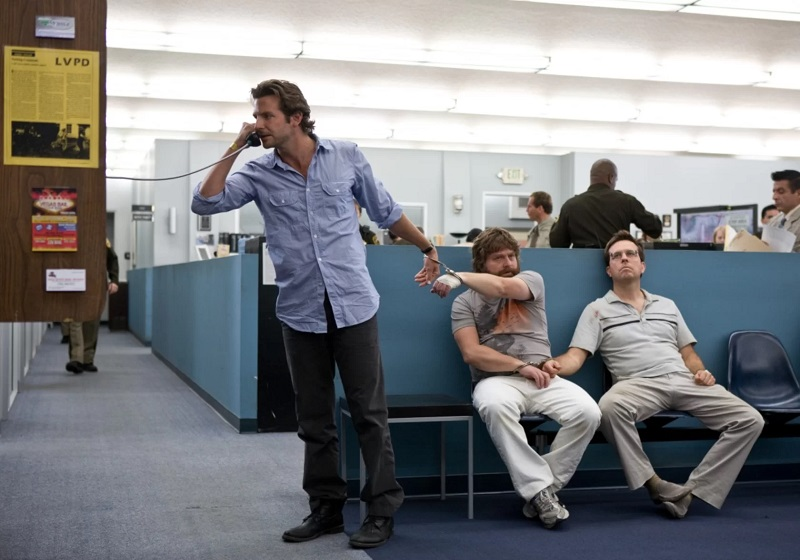

Комедии были и остаются, пожалуй, главным зрительским жанром кино. На серьезные драмы еще нужно настроиться, хорроры любят далеко не все, но кто не любит посмеяться над остроумными шутками и сумасшедшими ситуациями, в которые попадают герои? Собрали для вас 5 отличных комедий: от современной голливудской классики до новозеландского мокьюментари о приятелях-вампирах.
«Солдаты неудачи»
Главные роли:
- Бен Стиллер
- Роберт Дауни мл.
- Джек Блэк
- Джей Барушель
В азиатских джунглях идут съемки военного боевика «Тропический гром». У команды всё не складывается — режиссер фильма Дэмиен (Стив Куган) никак не может совладать с разномастным кастом: вышедшим в тираж героем боевиков Таггом Спидманом (Бен Стиллер), звездой низкопробных комедий Джеффом Портным (Джек Блэк), рэпером Альпа Чино (Брэндон Т. Джексон) и пятикратным оскароносцем Кирком Лазарусом (Роберт Дауни-младший), ради роли ставшего чернокожим. Разочарованный в медленном темпе производства продюсер Лес Гроссман (Том Круз) отправляет артистов в реальную «горячую точку». Теперь им придется по-настоящему сражаться в джунглях, чтобы выжить и наконец закончить фильм.
Комедия Бена Стиллера — одна большая шутка над голливудской системой как таковой. Фильм начинается с череды трейлеров несуществующих картин, которые так или иначе высмеивают разные тренды американской индустрии: бесконечные сиквелы боевиков или манипулятивные оскаровские драмы. И с первых минут он не прячет свой ироничный оскал. Здесь много физического юмора и эксцентричных образов (особенно, конечно, запоминается неузнаваемый Том Круз в роли жесткого продюсера Леса Гроссмана), но в первую очередь это кино о том, что производство фильмов — чистое безумие.
«Большой Лебовски»
Главные роли:
- Джефф Бриджес
- Джон Гудман
- Джулианна Мур
- Стив Бушеми
Джеффри Лебовски по прозвищу Чувак (Джефф Бриджес) живет без забот: ходит в магазин в одном халате да катает с друзьями (Стив Бушеми и Джон Гудман) шары для боулинга. Но в один день в его квартиру заявляются гангстеры, требуют какие-то деньги и даже мочатся на ковер, который вообще-то задавал тон всей комнате. Им невдомек, что они перепутали Чувака с другим Лебовски, богачом и владельцем огромного особняка. Джефф теперь хочет возместить ущерб за поврежденное имущество.
Комедию братьев Коэн не оценили на момент выхода: критики посчитали ее слишком несобранной и пассивной. Уже много позже люди поняли, что в этом-то и была суть. «Большой Лебовски» — фильм о человеке, который идет по жизни легко и ни о чем особенно не заботится. Происходящая вокруг криминальная заварушка его интересует так же сильно, как предстоящий турнир по боулингу. И Коэны относятся к истории идентично. Захватывающий детективный сюжет они заменяют остроумным портретом абсурдного мира, где события почти случайны, а последствия неожиданны.
«Мальчишник в Вегасе»
Главные роли:
- Брэдли Купер
- Эд Хелмс
- Зак Галифианакис
- Джастин Барта
За два дня до свадьбы Даг собирается на мальчишник с лучшими друзьями: дантистом Стю (Эд Хелмс), школьным учителем Филом (Брэдли Купер) и странноватым братом невесты Аланом (Зак Галифианакис). Вечеринка должна пройти цивильно, но что-то идет не так. Парни просыпаются на следующий день, совершенно ничего не помня о предыдущей ночи. У Стю куда-то пропал зуб, в спальне прячется живой тигр. Ах да, и Дага нигде нет.
«Мальчишник в Вегасе» не просто так стал любимчиком зрителей по всему миру и классикой алкогольной комедии. Простенький детективный сюжет о попытках воспроизвести события выбитой из памяти ночи режиссер Тодд Филлипс превращает чуть ли не в слэпстик-аттракцион. В фильме есть и преступные разборки, и дикие тигры, и очень-очень много черного юмора. Ко второй и, особенно третьей части, формула несколько выдохлась, но вот первый «Мальчишник» до сих пор смотрится очень даже прилично.
«Славные парни»
Главные роли:
- Райан Гослинг
- Ким Бейсингер
- Рассел Кроу
- Энгаури Райс
Частный детектив Холланд Марч (Райан Гослинг), зарабатывающий на простеньких делах, вдруг получает серьезное задание: пожилая женщина нанимает его, чтобы расследовать смерть дочери-порнозвезды. Вскоре его пути пересекутся с Джексоном Хили (Рассел Кроу), суровым ищейкой, который при первой же встрече ломает Марчу руку. Но мужчинам придется забыть о разногласиях: в Лос-Анджелесе творится что-то странное, пропадают и погибают люди, и всё это как-то связано с таинственной пленкой и экоактивистами.
Режиссер Шейн Блэк — возможно, самый главный мастер бадди-муви в Голливуде. Именно его перу принадлежат «Последний бойскаут», «Долгий поцелуй на ночь», а также все части «Смертельного оружия». В «Славных парнях» он воспроизводит свой любимый сюжет: двое очень разных детективов вынуждены работать вместе над расследованием, параллельно смешно подтрунивая друг над другом. Ничего вроде бы нового, но фильм в то же время совершенно не кажется вторичным. То ли дело в хорошем чувстве юмора Блэка, то ли в атмосферном Лос-Анджелесе 60–х, то ли в колоритном дуэте Рассела Кроу и Райана Гослинга.
«What We Do in the Shadows»
Main roles:
- Jemaine Clement
- Taika Waititi
- Jonathan Brug
- Corey Gonzalez-Macuer
Four vampires of different ages live in a simple house in Wellington. They somehow get along, sharing household chores among themselves, and in the evenings they get out to clubs (but only to those where they are invited) and look for new victims. One of these, a young and reckless guy Nick, instead of dinner, becomes the new vampire. And now, together with his human friend Stewie, he will teach the ancient bloodsuckers to live in the technological XXI century.
Today, few people in the cinematic world do not know the name of Taika Waititi, the Oscar-winning author of Jojo Rabbit, Hunt for the Wild Men and the blockbuster Thor: Ragnarok. But more recently, he, along with longtime friend Jemaine Clement, filmed a mockumentary comedy about vampires for a penny. Then they were almost unknown to anyone outside of their native New Zealand. Real Ghouls took their career to a whole new level and spawned an entire franchise - now there is an American TV series What We Do in the Shadows, a spin-off of Paranormal Wellington, and an upcoming separate project about polite werewolves. The success is absolutely deserved. This is a truly witty comedy that playfully rethinks the cinematic image of vampires: from Nosferatu to sugary bloodsuckers from Twilight.